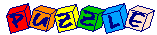

Click Here to Visit our Sponsor
Brain Tests & Experiments
|

|
![[BACK]](left.gif) back to the main puzzle page.
back to the main puzzle page.

i.
Brain Dominance Test
We offer you a test to detect the dominant part(s) of
your brain! To perform this test, you should first download the following
MS-Windows program:
After downloading it, you can start the brain test on your own PC,
and we ensure you that it is worth the effort!
![[UP]](back.gif) back to index
back to index
ii.
Color Reading
Below you find a number of words written in
different colors. Try to name the colors you see as fast as possible.
This means that you should say the names of the colors in which the words
are written, and not read the words themselves.
|
black
blue
green
orange
pink
yellow
purple
red
black
white
|
You probably noticed that it is rather tough to
say the names of the colors very fast, since your brain is also reading
the text, which is almost unavoidable...
back to index
iii.
Black Dots
Look at the image below.

The Question:
How many black dots can you find in the image?
Note that the image is static (i.e. it is not changing); we are not fooling you!
The Answer:
 Click here!...
Click here!...
back to index
iv.
Magic Spiral
We offer you a unique optical illusion!
To do this optical experiment, you should first download the following
MS-Windows animation:
optical.exe (22 Kbytes).
After downloading it, you can start the animation on your own PC.
When the animation is started, you should stare at its center for about 30 seconds.
Then look at the back of your hand, which is on your mouse!
The Question:
What do you observe, when looking at your hand?
The Answer:
Click here!...
back to index
v.
The Urinal Game
Test your knowledge of men's room etiquette! To perform this test,
you should download the following MS-Windows MacroMedia Shockwave Flash, made by
CleverMedia:
After downloading it, you can start the urinal game on your own PC.
Instead of downloading, you can also play the on-line version of the urinal game at:
The online game at Macromedia Shockrave!
(you need a Shockwave Flash plug-in)
back to index
vi.
Quick Eye Exam
Just do it. Don't cheat!
Because of you did, this test would be no fun.
We promise that there are no tricks to this test.
Read the sentence below:
FINISHED FILES ARE THE
RESULT OF YEARS OF SCIENTIFIC
STUDY COMBINED WITH THE
EXPERIENCE OF YEARS
The Question:
How many times do you see the letter F in the sentence above?
Count them only once! Do not go back and count them again!
The Answer:
Click here!...
back to index
vii.
Mental Arithmetic Test
Perform the calculation below as fast as you can, and using only mental arithmetic
(so without pen and paper, or a calculator!).
Take 1000 and add 40.
Add 1000.
Add 30 and then add 1000.
Add 20.
Add 1000 and then add 10.
|
The Question:
What is the result of this calculation?
The Answer:
Click here!...
back to index
Click Here to Visit our Sponsor
Copyright © 1996-2005. RJE-productions. All rights reserved.